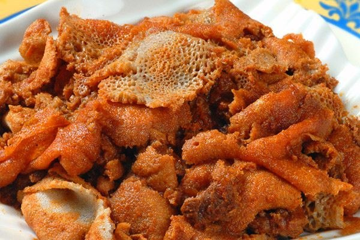
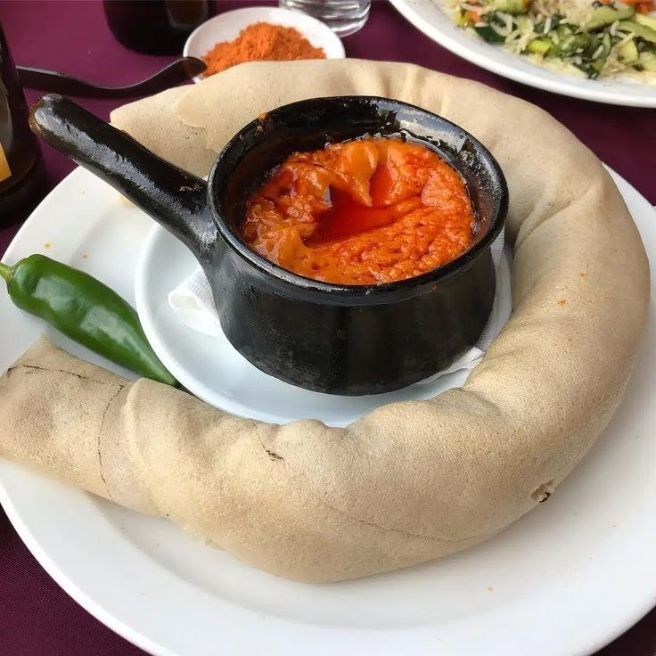
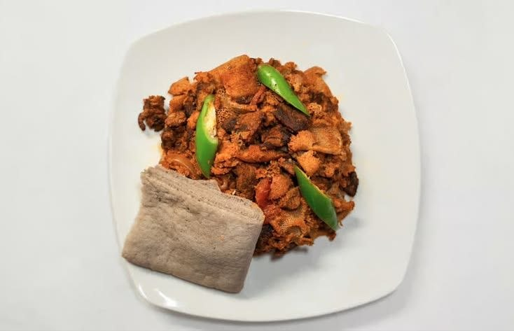
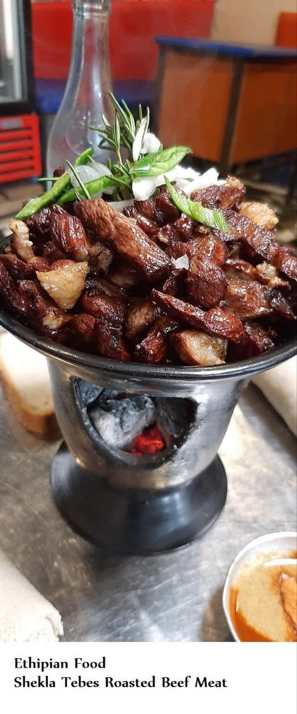
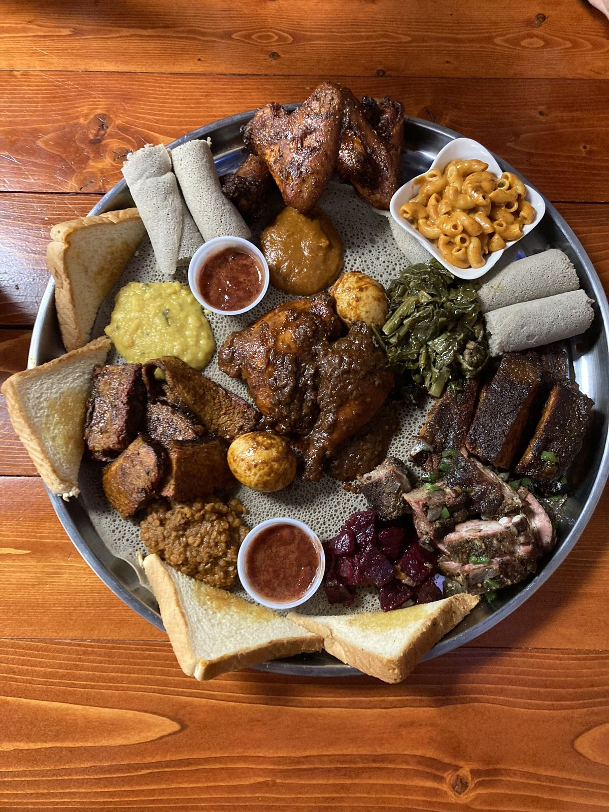

ፍርፍር
A traditional Ethiopian breakfast dish made with shredded injera sautéed in spiced butter and seasoned with berbere. Savory, tangy, and comforting—best enjoyed with a side of fresh injera.
2 birr
ዶሮ ወጥ
A classic Ethiopian chicken stew simmered in a rich berbere spice sauce with onions, garlic, and ginger. Served with hard‑boiled eggs and paired perfectly with injera. Bold, spicy, and deeply flavorful.
3 birr
ቴስቲ ሶያ
Tender soy chunks sautéed with onions, peppers, and Ethiopian spices. A flavorful vegetarian twist on the classic tibs, served hot with injera.
3 birr
ሽሮ
A smooth, flavorful stew made from roasted chickpea or broad bean flour, simmered with onions, garlic, and berbere. Creamy, comforting, and best enjoyed with injera.
3 birrክክ
Split peas simmered in a bold berbere sauce with onions and garlic. Rich, spicy, and hearty—served with injera for a vibrant, flavorful classic.
1 birr
ቋንጣ ፍርፍር
Shredded injera sautéed with spiced butter and berbere, mixed with strips of dried beef (quanta). Smoky, tangy, and hearty—an Ethiopian favorite best enjoyed with fresh injera.
3 birr
ሸክላ ጥብስ
Succulent beef cubes sautéed with onions, peppers, and Ethiopian spices, served sizzling hot in a traditional clay pot. Smoky, spicy, and full of flavor—best enjoyed with injera.
3 birr
በየ አይነቱ
A vibrant platter of assorted Ethiopian dishes—lentils, peas, greens, and stews—served together on injera. Colorful, diverse, and perfect for sharing the full taste of Ethiopia.
3 birr
ክትፎ
Finely minced beef seasoned with spiced butter and mitmita chili powder. Served raw, lightly cooked, or fully sautéed—rich, buttery, and boldly flavorful, paired with injera or gomen.
3 birr